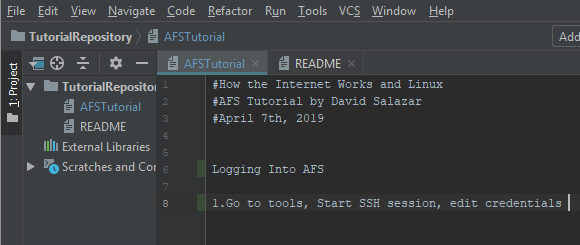
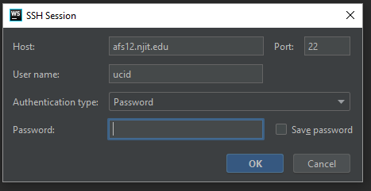
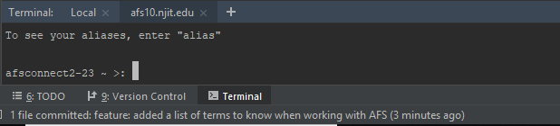
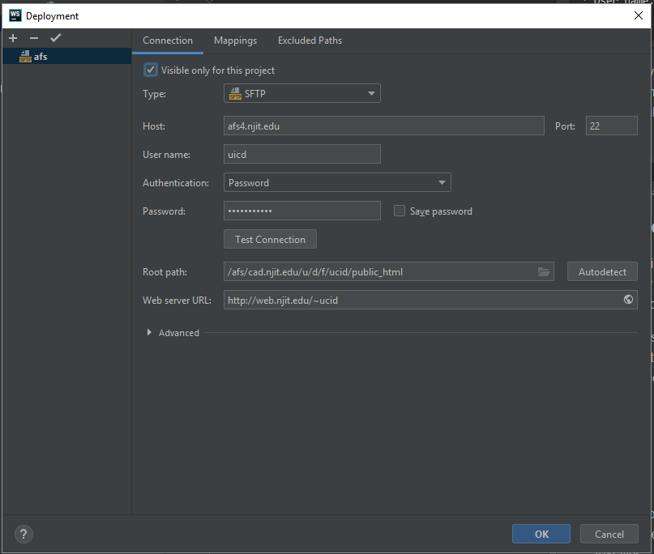
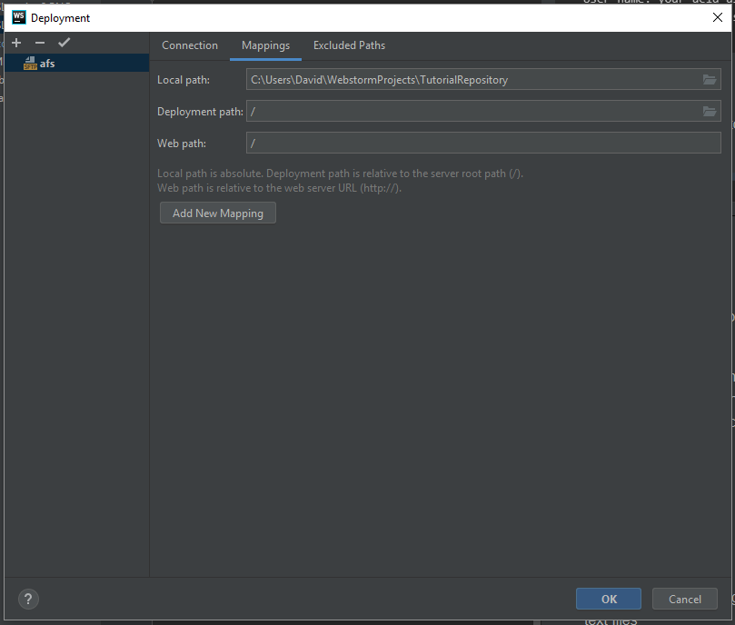
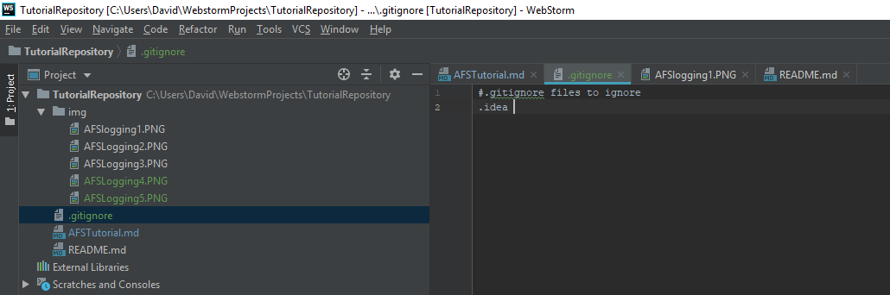
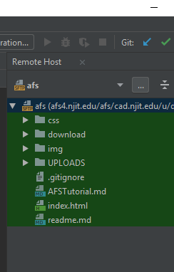

There is a lot to learn for HTML and since this was only an introductory course, we have touched the surface of
unlimited possibilities
The major topics and skills Professor Williams emphasized were:
How to properly collaborate using Github and Git
How to link upto AFS
Basic computer terminology and website formats
What is Git and Github?
Git is version control system for tracking changes in a source code for software development. Github is a web-based
hosting service for version control using GIT. It gives you distributed version control and source code management
functionality of GIT.
How to properly collaborate using Github and Git
Now that we know what Git and Github are, how do we use this to help develop websites. Once you work in the corporate
world many people will be working on one project. So to share each others work and changes, Git and Github are
needed. To start you first create a repository on Github. After creating the repository, you can add however many
collaborators to work on the project. All the collaborators will create their own branch to work on to prevent
errors on the master branch. When changes are made, team members create commits. Once commits are made, you have to
merge your own personal branch into your local master branch. Then you push all your stuff through Git. The purpose
of doing this is that other members can then pull everything you pushed to Git and now the origin master has all the
changes you made and whoever else made.
How to link upto AFS
1.Go to tools, Start SSH session, edit credentials.

2. In the following window,

Enter the following,
* Host: afs(any number between 1-22).njit.edu
* Port: 22
* User name: your ucid username
* Password: your ucid password
3. The following terminal window shows after successfully logging into AFS,

### Deployment
used to have files of a website locally and linked to a website remote
1. Go to tools, Deployment, and select configuration, click on the + tab, name host, select SFTP

Enter the following,
* Host: afs(any number between 1-22).njit.edu
* Port: 22
* User name: your ucid username
* Password: your ucid password
* Test Connection. Make sure that the root path has /ucid/public html
* Webserver URL should read: http://web.njit.edu/~ucid
2. In the deployment window select Mappings and add / in the Deployment path

3. Add a .gitignore file to your project, and include .idea inside the file, and commit

4. Select Tools, Deployment, Automatic upload
5. Tools, Deployment, Browse Remote Host. The remote host w/ files will appear on the upper right side of your screen.

6. Scroll over to the location of your remote host afs files (in step 5), and right click on the index.html file.
Select the download from here option. Commit now.
7. Select VCS, import into Version Control, select share project on Github, press ok.
Website Layouts
The main two website layouts we learned this year were the Z and F layout. Z layouts are mainly used for homepages
and F layouts are mainly used for content pages.